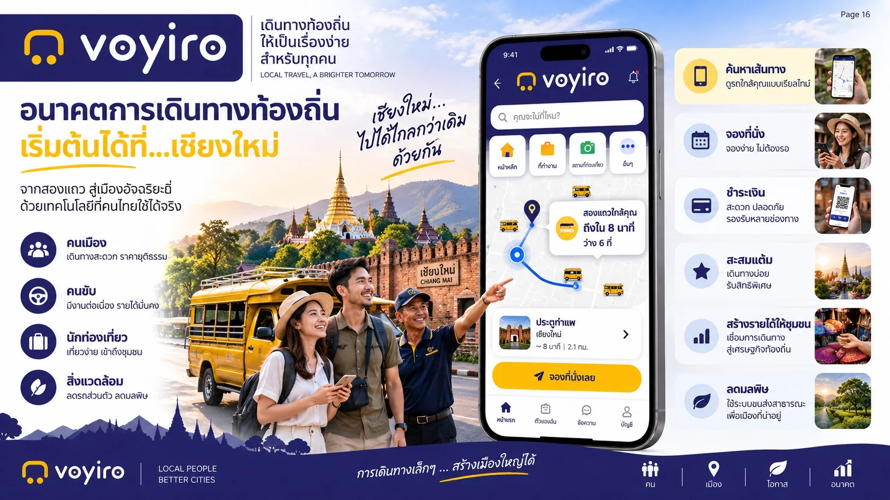

우리의 이야기
모든 관광 도시에서 던져지는 같은 질문
도시 곳곳에 합법적인 대중교통 기사들이 기다리고 있는데, 왜 여행자는 차비를 흥정해야 할까요? 그리고 왜 승객들은 대중교통 차량을 쓰지 않는 앱으로 발길을 돌릴까요?
이 질문은 태국에서도, 이웃 국가에서도 똑같이 나옵니다. 그래서 voyiro는 같은 도시에 있는 세 주체, 즉 운송 협동조합과 지역 관광 사업자, 그리고 승객을 연결해 네트워크 전체에 하나의 기준 아래 투명하게 이익을 나누고자 탄생했습니다.
[입력 예정: เรื่องราวจริงของผู้ก่อตั้ง: จุดเริ่มต้น ปีที่เริ่ม ประสบการณ์ที่เกี่ยวข้อง]
